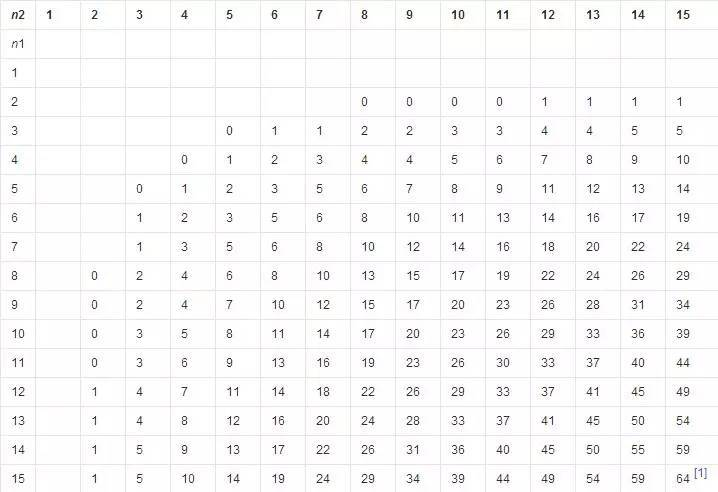
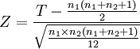
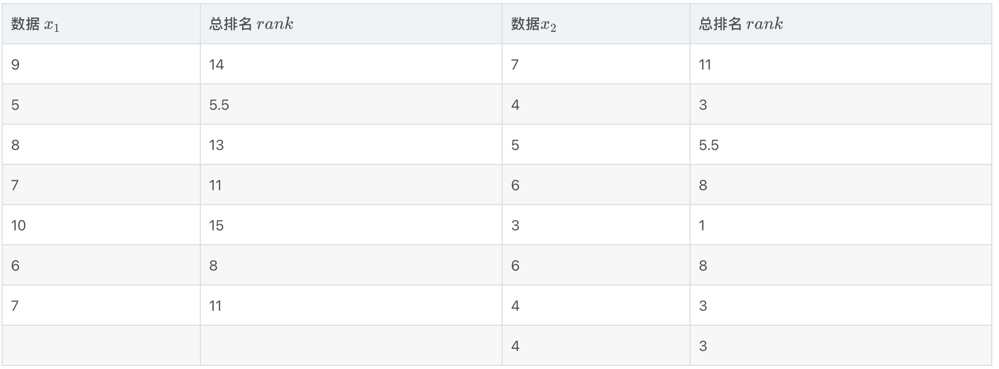
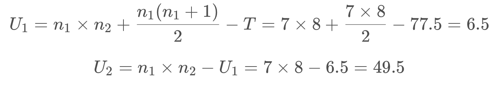
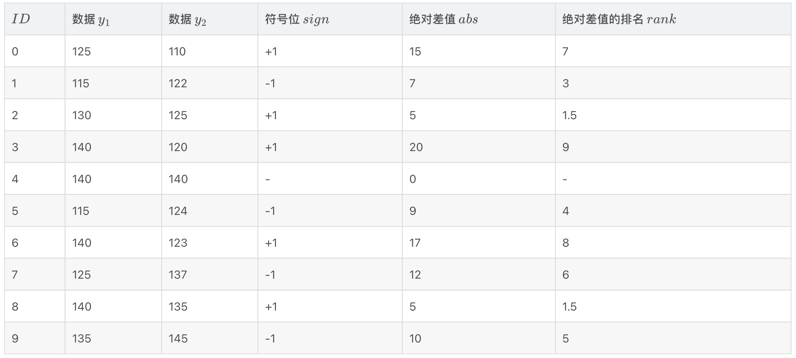
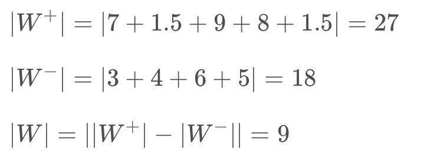
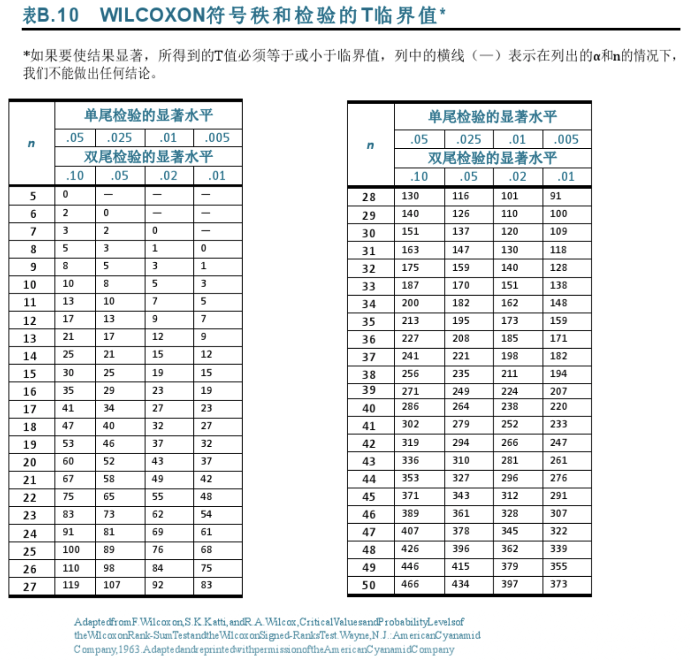

Frank Wilcoxon (1892—1965) 是美国的统计学家，发表了 70 篇左右论文，但其最大的贡献就是这 2 个以他名字命名的非参假设检验方法：秩和检验 和 符号秩检验。他在 1945 年发表的论文中将二者分别称为 非成对检验 （unpaired experiment）和 成对检验（paired comparison）。 正是因为其巨大影响力使得这两个检验方法都以他的名字命名，并流传下来。在不需要假设样本空间为正态分布的情况下，测试分布是否完全相同。
一、Wilcoxon rank-sum test
1、基本概念
在统计学中，Wilcoxon rank-sum test（威尔科克森秩和检验）也叫 Mann-Whitney U test（曼-惠特尼 U 检验），或者 Wilcoxon-Mann-Whitney test。秩和检验是一个非参的假设检验方法，一般用来检测 2 个数据集是否来自于相同分布的总体。秩和” 当然就是指 “将排名进行求和” 的操作。在秩和检验中，我们不要求被检验的 2 组数据包含相同个数的元素。
只能检测两个样本，只有两个样本才可以”和 sum“
2、两独立样本Wilcoxon检验的公式
（1）两个样本的容量均小于10的检验方法
检验的具体步骤：
第一步：将两组数据混合，并按照大小顺序编排等级。最小的数据等级为1，第二小的数据等级为2，以此类推（若有数据相等的情形，则取这几个数据排序的平均值作为其等级）。
第二步：分别求出两个样本的等级和W1、W2。
第三步：假设n1=一号样本观察值的项数；n2二号样本观察值的项数；R1=一号样本各项秩和；R2=二号样本中各项秩和。
第四步：通过表根据两个样本的数量来查询临界值
附表：

（2）两个样本的容量均大于10的检验方法
当两个样本容量都大于10时，秩和T的分布接近于正态分布，因此可以用Z检验，其基本公式为：

T为较小的样本的秩和。
我们可以通过自由度（df）与检验统计量（|Z|），通过查询其相对性的Z界值表，对比其在df=n1+n2-1处的p值。
如果p值低于或等于显着性水平0.05，我们可以拒绝无效假设并接受备择假设。换句话说，我们得出结论，两组样本代表的总体间存在有显着差异。
3、应用实例：
假设我们有 2 组数据，x1 中有 7 个元素，x2 中有 8 个元素，使用秩和检验判断这 2 组数据是否存在显著性差异。
所以这是两个样本的容量均小于10的检验方法

步骤 1：我们首先将 x 1 和 x 2 整合成一个序列，并按升序重新排序，序号记在表中的 r a n k 列当中。我们分别计算 2 组数据的排名之和R1和R2有，
R1 = ( 14 + 5.5 + 13 + 11 + 15 + 8 + 11 ) = 77.5
R2 = ( 11 + 3 + 5.5 + 8 + 1 + 8 + 3 + 3 ) = 42.5
注意，当我们计算若干等值元素的排名时，会用这些元素排名的平均值作为它们在整个序列中的排名。例如，x 1中的第 2 个元素与 x 2中第3 个元素的值都等于 5，且这 2 个 5 在整个序列中的排名分别是第 5 和第 6，因此这两个元素的排名为 (5 + 6)/2 = 5.5 。其余等值元素的排名计算也与之类似。
步骤 2：令 n 1 和 n 2 分别表示 2 组数据的个数，即 n 1 = 7 , n 2 = 8 。再令 T 表示小样本的排名和，即 T = R1 = 77.5 。根据计算公式可得 U1 和 U2 的值如下，

步骤 3：由于 U1更小，我们依此来查 Wilcoxon 双尾临界表，当 α = 0.05 , n1 = 7 , n2 = 8时的临界值是 10。因为 U1 < 10 ，故应该拒绝原假设。最终结论是：x1 和 x2 存在统计意义上的显著性差异，它们可能来自分布不同的总体。
Python代码：
得到的结果如下，可知我们的 U 1值 = statistic = 6.5，即我们的 p-value 值 =0.0069
1 | from scipy import stats |
4、用R完成两独立样本Wilcoxon检验
可以使用R函数wilcox.test()计算两独立样本Wilcoxon检验：
wilcox.test(x, y, alternative = "two.sided")
- x，y：数值向量
- alternative：备择假设。允许值为“two.sided”（默认），也可以根据需要设置为“greater”或“less”之一。
（1）将数据导入R
在这里，我们将使用一个示例数据集，其中包含18个人（9名女性和9名男性）的体重：
1 | women_weight <- c(88.9, 81.2, 73.3, 21.8, 63.4, 84.6, 28.4, 28.8, 28.5) |
我们想知道，女性体重是否与男性体重不同？
（2）检查数据
按性别计算统计信息（中位数和四分位数范围（IQR））。可以使用dplyr软件包。
1 | #安装及导入**dplyr**软件包 |
（3）初步检验两独立样本是否满足正态分布
假设1：两个样本是否独立？
是的，因为来自男性和女性的样本无关。
假设2：两组中每组的数据是否服从正态分布？
我们将使用with()和shapiro.test()的函数来为每组样本计算Shapiro-Wilk测试。
1 | # Shapiro-Wilk normality test for Men's weights |
输出结果中，两个p值小于显着性水平0.05，说明两组数据的分布与正态分布有显着差异。数据分布不符合正态分布的假设检验成立。
请注意，如果两组数据中只有一组不是正态分布，也要使用非参数两样本Wilcoxon秩检验。
假设3：这两个总体是否符合方差齐性？
我们将使用F检验来检验方差齐性。可以使用var.test()函数执行以下操作：
1 | res.ftest <- var.test(weight ~ group, data = my_data) |
F检验为p = 0.8617。它大于显着性水平alpha = 0.05。因此，两组数据的方差之间没有显著差异。因此我们认为男女两组方差相等（方差齐性）。
由于以上3个假设综合，由于数据不符合正态分布，因此，我们不可以使用student-t检验。需要使用两独立样本Wilcoxon检验。
（4）计算两独立样本Wilcoxon检验
问题：男女体重之间有显着差异吗？
1 | res <- wilcox.test(weight ~ group, data = my_data, var.equal = TRUE) |
在上面的结果中：
- p值是wilcoxon检验的显着性水平（p值= 0.1135）。
注意：
- 如果要检验男性的体重是否小于女性的体重，请输入以下内容：
1 | wilcoxon.test(weight ~ group, data = my_data, |
- 或者，如果您想测试男性的体重是否大于女性的体重，请输入
1 | wilcoxon.test(weight ~ group, data = my_data, |
（5） 结果解释
检验的p值为 0.1135，大于显着性水平alpha = 0.05。我们可以得出结论，男性的体重与女性的体重没有显著不同。
二、Wilcoxon signed-rank test
基本概念：Wilcoxon signed-rank test（威尔科克森符号秩检验）也是一种非参的假设检验方法
1、单样本 Wilcoxon符号秩检验
原理：
单样本Wilcoxon符号秩统计量的思想是：首先把样本与总体中位数（理论值）的差值的绝对值|X1|、|X2|、|X3|……|Xn|进行排序，其顺序统计量为|X|(1)、|X|(2)、|X|(3)……|X|(n)。如果数据与总体中位数相同，则其差值会关于零点对称，对称中心两侧数据的疏密和取负值的数据交错出现，取正值数据在样本绝对值样本中的秩和与取负值数据在绝对值样本中的秩和应近似相等，概率均为0.5。
在求得正值秩和和负值秩和后，通过较小秩和和自由度（n-1）查询相应T界值表，获得相应P值。
解释结果：如果p值低于或等于显着性水平0.05，我们可以拒绝无效假设并接受备择假设。换句话说，我们得出结论，样本代表的总体中位数与理论中位数有显着差异。
2、使用R函数wilcox.test()计算单样本Wilcoxon检验
1 | wilcox.test(x, mu = 0, alternative = "two.sided") |
- x：包含数据值的一个数字向量
- mu：理论值。默认值为0，但可以更改。
- alternative：备择假设。允许值为“two.sided”（默认），也可以根据需要设置为“greater”或“less”之一。
（1）将数据导入R
在这里，我们将使用名为DNase的内置R数据集。我们之后会检验DNase数据中conc（蛋白浓度）与理论值3.0之间是否有统计学差异。
1 | # 导入R内自带的DNase数据集 |
（2）检查数据
你可以使用head()和tails()函数检查数据，这将分别显示数据的第一部分和最后一部分。
1 | # 显示前六行内容 |
我们想知道，实验中的conc变量（蛋白浓度）是否不同于理论值3.0？
1 | # conc的统计学概况 （更多详情请参看第四讲 R-描述性统计分析） |
（3） 初步检验单样本t检验的假设条件（正态性检验） 正态性检验（shapiro-Wilk检验）
1 | shapiro.test(my_data$conc) |
由上视觉分析及正态性检验显示，conc不符合正态性分布，远无法满足单样本t检验的假设条件（P<<0.05）,需要考虑Wilcoxon检验.
（4）计算单样本Wilcoxon检验
1 | # 单样本Wilcoxon检验 |
在上面的结果中：
- p值是t检验的显着性水平（p值=8.4e-05）。
- 如果要检验蛋白浓度是否小于3（单向测试），请输入以下内容：
1 | wilcoxon.test(my_data$conc, mu = 3, |
- 或者，如果要检验蛋白浓度是否大于3（单向测试），请输入以下命令：
1 | wilcoxon.test(my_data$conc, mu = 3, |
（5）结果解释
检验的p值为0.28，大于显着性水平alpha = 0.05。我们可以得出结论，蛋白浓度与3无显著性差异，p值 = 0.28。
（6） 获得wilcoxon.test()函数的p值返回值
1 | # 打印p值 |
3、Matched-pair 两独立样本Wilcoxon符号秩检验
假设我们有 2 组数据 y1 和 y2，如下表所示。我们按照如下 3 步来计算 wilcoxon signed-rank test 的结果

步骤 1：首先对 y1 和 y2两两成对配对形成 10 个数据对（即 ID = 0, . . . ,9 ），然后将这 10 个数据对两两求差，得到符号位sign列。具体的做法是：当 y1 元素比 y2 对应元素大时，符号位为正，即 +1；当 y1 元素比 y2 对应元素小时，符号位为负，即 -1。例如，在 ID = 1 的数据对中，125 > 110，故其符号位为 +1.
步骤 2： 首先对 y1 和 y2 两两成对求差得到绝对值 abs 列，然后根据 abs 列排序得到rank列。当某一对 y1 和 y2 的元素相等时，即 abs = 0 时，我们不计算其 rank 值。例如，在 ID = 4 的数据对中，y1和 y2 的值都是 140，因此这对数组没有排名值。
步骤 3： 有了这个 sign 和 rank 列的结果后，我们就可以来计算秩和了，其中大于 0 的秩和 |W+| 和 对于小于 0 的秩和 |W−|，以及最终的符号秩和 |W| 如下所示，

步骤 4：最后我们根据 |W| 来查表，我们得到当 Wilcoxon 在 α = 0.05， n = 9 的时候的临界值是 5，而我们计算出来的 |W| = 9 > 5，因此我们不能拒绝原假设。最终结论是：y 1 和 y 2 不存在统计意义上的显著性差异，它们可能来自于同一分布的总体。

R代码：
1 | wilcox.test(data$Y1, ata$Y2, paired=TRUE) |
Python代码：
1 | from scipy import stats |
得到的结果如上，其中statistic= 18.0，表示 2 类符号秩和较小的一个（|W+| 和|W-|最小的是18，pvalue=0.5936… 就是我们需要的 p-value 值。之所以出现 Warning 信息是因为我们的数据量太少，一般来讲大于 20 是比较合适做假设检验的。
三、R中的wilcox.test()函数如何选择上述两种方法？
在R中只有wilcox.test()，那么系统怎么选择上述两种方法呢？使用help(”wilcoxon.test“)进行查看：
Details： The formula interface is only applicable for the 2-sample tests. If only x is given, or if both x and y are given and paired is TRUE, a Wilcoxon signed rank test of the null that the distribution of x (in the one sample case) or of x - y (in the paired two sample case) is symmetric about muis performed. Otherwise, if both x and y are given and paired is FALSE, a Wilcoxon rank sum test (equivalent to the Mann-Whitney test: see the Note) is carried out. In this case, the null hypothesis is that the distributions of x and ydiffer by a location shift of mu and the alternative is that they differ by some other location shift (and the one-sided alternative "greater" is that x is shifted to the right of y).
1、如果只有一个样本，就默认使用Wilcoxon signed-rank test；
2、如果有两个样本，两个样本数量一样且当参数paired=TRUE，就使用Wilcoxon signed-rank test，当参数paired=FALSE使用Wilcoxon rank sum test！！！